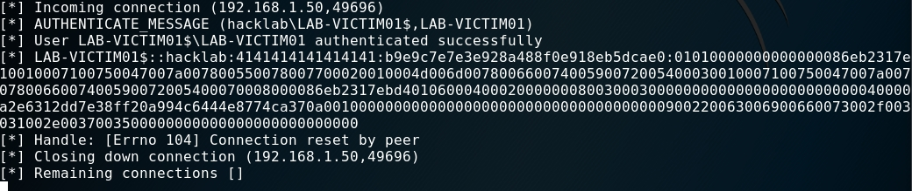

A while back Darren Mar-Elia tweeted about sending gpos down the wrong path.
You should read his article before we move on here.
After I was done I thought: “If an attacker can redirect the GPO to a SMB-Share, shouldn’t he be able to use tools like impacket’s SMB-Server to capture all the NTML hashes in a domain? Let’s try that.
My setup contained a simple domain with one Domain Controller, User and Client. For the attacker-machine I used my Kali Linux. I started impacket’s SMB-Server and pointed the GPO to it by changing “gPCFileSysPath”.

Then I tried to view the GPO-Settings again and indeed got the NTLM Hash of the Domain-Admin.
The next thing I focused on was the behavior of the clients / users that get the GPO. Will they sent us the hash aswell? Well - in my short test I wasn’t able to get any user hashes - but the Computer-Account as seen in the picture after issuing a gpupdate /force. The same would happen on a reboot.

I searched for attacks someone could pull of with the Machine-NTLM-Hash and found those:
blog.secarma.co.uk
adsecurity.org
This attack-vector might be of limited use because you need write-access to the GPO in the first place. But it was a nice and simple research project for me.
Take care!
x41